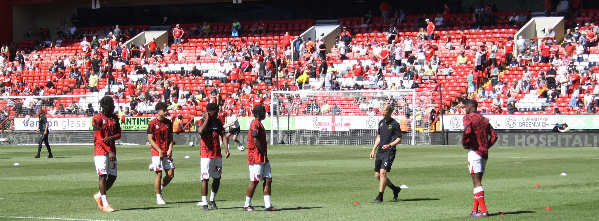
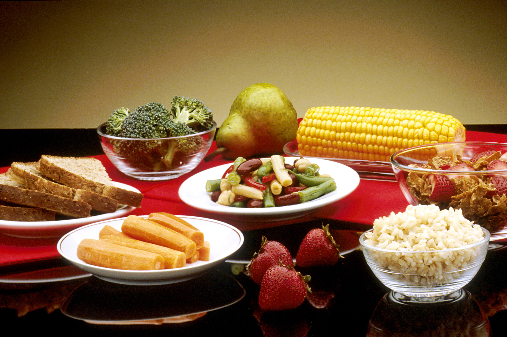

- kaurapuuroa 1-1,5 dl kuivana
- 2 dl maitoa tai jogurttia
- 1 banaani
- 2 kananmunaa
- 1 rkl pähkinöitä tai siemeniä

1. Mikä on Bulkkausi ja mikä on Cutkausi
Bulkkausi eli lihasten rakennuskausi
Bulkkausi tarkoittaa sitä, että syöt hieman enemmän energiaa kuin kulutat, jotta treeni, palautuminen ja lihaskasvu saavat paremman ympäristön. Tämä ei tarkoita holtitonta mättöä. Hyvä Bulkkausi on hillitty, siisti ja seurattu.
Bulkkaudella tavoite on kasvattaa lihasta mahdollisimman paljon ja rasvaa mahdollisimman vähän.
Yksinkertainen muistisääntö: lihasten kasvatukseen pitää syödä hieman enemmän kuin kuluttaa.
Cutkausi eli kiristelykausi
Cutkausi tarkoittaa sitä, että syöt hieman vähemmän energiaa kuin kulutat, jotta rasvaa lähtee ja lihaksen näkyvyys paranee. Cutkausi ei tarkoita nälkiintymistä. Hyvä Cutkausi on hallittu energiavaje, riittävä proteiini ja järkevä treeni.
Cutkaudella tavoite on pudottaa rasvaa niin, että lihasmassa säilyy mahdollisimman hyvin.
Yksinkertainen muistisääntö: kun halutaan näyttää lihaksikkaalta patsaalta, pitää syödä vähemmän kuin kuluttaa.
2. Miksi Bulkkausi on tärkeä
- lihaskasvu on yleensä helpompaa, kun energiaa on vähän enemmän
- treeni kulkee paremmin, kun tankki ei ole jatkuvasti tyhjä
- palautuminen, uni ja suorituskyky pysyvät usein parempina
- jatkuva ylläpitokaloreilla pyöriminen ei aina anna parasta ympäristöä lihaksen rakentamiseen
Jos haluat näyttää myöhemmin “patsaalta”, sinun pitää ensin rakentaa sitä patsasta.
3. Miksi Cutkausi on tärkeä
- lihas ei näy kunnolla, jos rasvaa on sen päällä paljon
- Cutkausi näyttää mitä Bulkkaudella oikeasti rakennettiin
- monelle Cutkausi toimii myös kehonhallinnan ja ruokarytmin testinä
- Cutkausi opettaa erottamaan oikean nälän, tavan ja mieliteon toisistaan
Bulkkausi rakentaa kokoa. Cutkausi paljastaa muodon.
4. Näiden kausien raskaat puolet, joista puhutaan liian vähän
Bulkkausi ja Cutkausi eivät ole vain ruokaa. Ne voivat tuntua myös päässä.
Bulkkausi voi tuntua raskaalta näin
- vaaka nousee ja pää voi säikähtää
- peilikuva pehmenee hetkittäin
- tulee olo että “lihoan pilalle” vaikka osa noususta on suunniteltua
- syöminen voi alkaa tuntua työltä, jos ruokaa on paljon
- liian aggressiivinen Bulkkausi tuo helposti turhaa rasvaa ja turhautumista
Cutkausi voi tuntua raskaalta näin
- ärtyisyys ja lyhyt pinna
- väsymys, kylmyys, heikompi treenifiilis
- ajatukset alkavat pyöriä ruoan ympärillä liikaa
- kehon tarkkailu voi muuttua pakkomielteisemmäksi
- liian syvä Cutkausi nostaa riskiä menettää lihasta ja jaksamista
Body dysmorphia ja kehonkuvaoireilu
Jos peili, paino, iho, vatsan koko, käsien koko tai yleinen “en näytä koskaan tarpeeksi hyvältä” alkaa hallita arkea, kyse ei ole enää vain normaalista fitness-kurin tunteesta. Silloin kannattaa jarruttaa ja hakea tukea. Fitness saa olla tavoitteellista, mutta se ei saa syödä päätä, ihmissuhteita tai koko elämää.
5. Kenelle sama ruokavalio ei sovi sellaisenaan
Nämä ruokavaliot eivät ole “yksi kaikille” -kaavat. Niitä pitää säätää ainakin näiden mukaan:
- pituus
- paino ja kehon koko
- aktiivisuus arjessa
- treenin määrä ja laatu
- lihasmassa ja rasvaprosentti
- hormonit tai mahdollinen hormonihoito
- ikä, uni, lääkitykset ja terveystilanne
6. Tärkeä huomio transihmisille ja hormoneihin liittyen
Jos henkilöllä on sukupuolenkorjaushoito, testosteronihoito, estrogeenihoito tai muu kehonkoostumukseen vaikuttava hormonihoito, ruokavaliota ei kannata rakentaa pelkän identiteetin perusteella. Fiksumpi tapa on katsoa:
- mikä on nykyinen kehon koko
- miten keho vastaa treeniin juuri nyt
- paljonko aktiivisuutta oikeasti on
- mikä on tavoite nyt, ei teoriassa
Käytännössä ruokavalio kannattaa laskea nykyisen kehon ja nykyisen tilanteen mukaan. Siksi tämän sivun laskuri nojaa ensisijaisesti rasvattomaan massaan, jos rasvaprosentti on tiedossa.
7. Arviolaskuri: paljonko kehosi voi tarvita
Tämä laskuri on suuntaa antava työkalu. Se ei ole lääkärin tai ravitsemusterapeutin henkilökohtainen suunnitelma, mutta se auttaa hahmottamaan omaa lähtötasoani.
-
Arvioitu ylläpitotaso kcal / vrk
-
Tavoitteen mukainen kcal / vrk
-
Suuntaa antava proteiini / vrk
-
Arvioitu rasvaton massa
Laskurin tulkinta
-
-
-

8. Hillitty Bulkkausi ruokavalio
Tämä on tarkoitettu ihmiselle, joka haluaa kasvattaa lihasta ilman että lähtee täysin käsistä. Tavoite ei ole “syö niin paljon kuin pystyt”, vaan syö vähän yli kulutuksen.
- kanaa, kalaa tai jauhelihaa 140-180 g
- riisiä, pastaa tai perunaa 1,5-2 dl tai 3-5 perunaa
- kasviksia vähintään 2 dl
- 1 rkl öljyä tai muuta pehmeää rasvaa
- rahkaa tai jogurttia 200-250 g
- marjoja tai hedelmä
- 2 viipaletta täysjyväleipää
- proteiini 140-180 g
- hiilaria 1,5-2 dl kypsänä
- kasviksia 2-3 dl
- pieni määrä rasvaa
Bulkkaudella hyvä perusajatus on: vähän enemmän ruokaa, ei kaksinkertaista ruokaa.
9. Hillitty Cutkausi ruokavalio
Cutkaudella ei lähdetä romuttamaan itseä. Tavoite on syödä hieman vähemmän energiaa, mutta pitää proteiini ja perusrakenne kunnossa.
- kaurapuuro 0,75-1 dl kuivana
- maustamaton jogurtti tai rahka 200 g
- marjoja 1 dl
- 1 kananmuna tai muu pieni proteiinilisä
- proteiini 140-180 g
- hiilaria vähemmän kuin Bulkkaudella
- kasviksia paljon, vähintään 3 dl
- rasva maltilla
- rahka tai jogurtti
- hedelmä tai marjat
- tarvittaessa pieni määrä pähkinöitä
- proteiini 140-180 g
- kasviksia paljon
- pieni tai kohtalainen hiilarilisä treenin ja kulutuksen mukaan
Cutkauden yleisin virhe on tehdä siitä liian kova. Silloin mieliala laskee, voima putoaa ja koko projekti alkaa tuntua viholliselta.
10. Cutkauden ruokavalio 1: DASH-linja
DASH toimii Cutkaudella hyvin, jos haluat pitää ruokavalion sydänystävällisenä, kuitupainotteisena ja hallitumpana.
- paljon kasviksia ja marjoja
- täysjyvää kohtuudella
- proteiinia joka aterialle
- suola ja valmisruoka alas
- pehmeät rasvat käyttöön
DASH-Cut sopii ihmiselle, joka haluaa siistin, terveysmyönteisen ja helposti ylläpidettävän kiristelyn.
11. Cutkauden ruokavalio 2: VHH-linja
VHH voi toimia Cutkaudella joillekin hyvin, koska osa ihmisistä kokee sen hillitsevän nälkää ja helpottavan syömisen hallintaa. Mutta se ei ole pakollinen eikä automaattisesti paras kaikille.
- proteiini pidetään korkeana
- kasviksia edelleen paljon
- hiilarit pidetään matalampina
- rasvaa ei vedetä yli vain siksi että hiilarit ovat matalat
VHH-Cut sopii paremmin ihmiselle, joka viihtyy vähähiilihydraattisessa syömisessä eikä tarvitse kovaa hiilaripainetta treenistä suoriutumiseen.
12. Kestävä peruskausi Bulkkauden ja Cutkauden välissä
Tämä on ehkä tärkein mutta aliarvostetuin vaihe. Kaiken ei tarvitse olla aina Bulkkausi tai Cutkausi. Kestävä peruskausi tarkoittaa sitä, että:
- paino pidetään melko vakaana
- treeni kulkee
- ruokarytmi normalisoituu
- pää lepää
- kehonkuva ehtii rauhoittua
Fiksu treenaaja ei elä koko vuotta äärimoodissa. Peruskausi suojaa päätä, kehoa ja tuloksia.
13. Miten tiedät mikä kausi sinun pitäisi tehdä nyt
Tee Bulkkausi, jos
- olet hoikka tai normaali ja lihasta on vähän
- haluat lisää kokoa ja voimaa
- jaksaminen on hyvä eikä rasvaprosentti ole jo valmiiksi korkea
Tee Cutkausi, jos
- rasvaa on selvästi enemmän kuin haluat
- lihas ei näy vaikka sitä on rakennettu
- haluat siistimmän ja erottuvamman fysiikan
Tee peruskausi, jos
- olet väsynyt jatkuvaan kontrolliin
- Bulkkausi tai Cutkausi on mennyt liian tunteisiin
- haluat vakauttaa syömisen, treenin ja pään
14. Kiva tietää: fitness ei ole sama kuin terveysautomaatti
Fitness-keho voi näyttää kovalta ja viimeistellyltä, mutta pelkkä ulkonäkö ei kerro kaikkea jaksamisesta, hormoneista, mielialasta tai terveydestä. Siksi fitness kannattaa tehdä fiksusti, ei vain ulkonäkö edellä.
15. Kiva tietää: mitä “patsasmainen” oikeasti tarkoittaa
Kun ihmiset puhuvat fitnessissä siitä, että halutaan näyttää vähän kuin patsaalta, he tarkoittavat yleensä tätä:
- selkeät hartiat
- näkyvä keskivartalo
- muotoa käsivarsissa ja jaloissa
- hallittu kokonaisuus, ei vain pieni painolukema
16. Tärkein muistettava lause
Bulkkausi rakentaa. Cutkausi paljastaa. Kestävä peruskausi pitää sinut järjissäsi.